A scan gives us 69,451 triangles describing the Stanford bunny. A frame needs a finite image. The interesting engineering problem is how to preserve the visible shape while making work follow the image rather than the size of the scan. This essay constructs that solution a piece at a time: bounded clusters, compatible simplification, a hierarchy of alternatives, view-dependent selection, resident pages, visibility, and finally shaded pixels.
The running experiment uses the original Stanford reconstruction, builds and measures a small virtual-geometry implementation, and imports that same geometry into Unreal Engine with Nanite enabled. Computed figures expose individual decisions; actual Unreal captures show the production renderer. Every caption identifies which produced it. The reference implementation uses a constrained replacement tree, not Unreal's repartitioned DAG, and its deliberately conservative error estimate is not Nanite's quality metric. These differences are explained where they matter.
You need ordinary programming and linear-algebra familiarity, but no Unreal background. The chapters introduce each graphics concept before its implementation. The source baseline is Unreal Engine 5.8.1 at 71fe36aac5a8df5ccd66c763ffc902b29b6a9c43; code links require Epic repository access. The original Nanite presentation explains the 2021 design; this checkout includes later programmable rasterization and tessellation paths. Read the mathematical derivations inline or expand their LaTeX source. Lumen has its own independent lighting essay.
Begin with the picture, then work backward to the mesh
A triangle mesh is an indexed list of positions together with attributes such as surface normals and texture coordinates. Three indices identify a triangle. An instance places this reusable geometry in the world with a transform: a rule that moves, rotates, and scales its local coordinates. The camera then transforms world positions into a projected image. Rasterization determines which pixel samples a projected triangle covers. A material program evaluates the surface properties needed to shade those samples.
In a conventional draw, the CPU arranges vertex buffers, index buffers, material bindings, and a draw command. The GPU transforms vertices, assembles triangles, rasterizes their coverage, and runs shaders. This organization is excellent when each triangle earns its cost by covering a substantial piece of the picture. It becomes awkward when a scanned stone wall has millions of triangles and is only a few hundred pixels wide. Most triangles contribute less than one pixel, yet conventional submission still describes the original geometry. Batching many objects reduces CPU commands without solving the GPU's excess triangle work.
Consider a deliberately simplified numerical example. A wall occupies 800 by 400 pixels, an area of 320,000 pixel locations. Its source mesh contains 8 million triangles. If all triangles are submitted, there are 25 source triangles for each pixel location before counting overdraw, hidden faces, and other views. The picture cannot display all those independently resolved shapes. This does not prove that exactly 320,000 triangles suffice: silhouettes, sharp changes of depth, perspective, and sampling complicate that statement. It does show why cost proportional to source triangle count is a poor objective.
A traditional level of detail, or LOD, replaces the whole mesh with a simpler mesh when it is farther away. That already changes the objective toward image complexity. However, a large courtyard wall can stretch from the camera to the far corner. One global LOD either overspends on distant regions or simplifies the near region too aggressively. A better representation allows different portions of a single mesh to choose different resolutions. To make that economical, those portions must also be independently culled, stored, and requested.
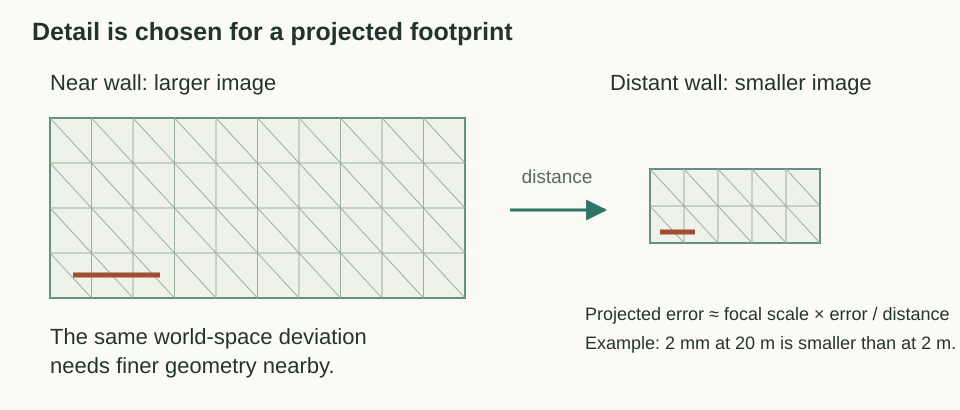
Nanite's central decision is to preprocess geometry into small, bounded units and several related approximations, then choose the visible approximation on the GPU. This moves a large part of per-object, per-LOD decision making away from CPU draw submission. It does not make the original mesh disappear: the build process still has to read it, derive the representation, store it, and sometimes retain alternative geometry for other consumers. Virtual geometry is a change in runtime access and granularity, not an assertion of infinite storage.
The runtime also has more than the main camera to satisfy. Shadows need views from lights. Lumen's surface captures need views of materials from directions that expose surfaces to a cache. A solution that works only for one camera would leave much of a modern frame expensive. Nanite therefore treats a view as explicit input to selection and rasterization. Different views can ask for different detail from the same shared asset. The important reusable object is the geometry representation; the selection is temporary work for a particular view.
The distinction between geometry and appearance will remain important throughout this article. A flat wall covered by an expensive layered material can have few triangles and still shade slowly. A highly detailed unlit statue can have many source triangles and shade cheaply after selection. Nanite mainly reorganizes geometry processing and visibility, while still accommodating material work. Lumen consumes geometry and material information to approximate light transport. Neither subsystem can be assigned a useful performance budget using polygon count alone.
Put a real scan through the machinery
A diagram can explain why clusters exist without establishing that a particular partition, simplifier, or rasterizer works. We therefore need an executable specimen. This laboratory starts with the original Stanford bunny, constructs geometry replacements, chooses a view-dependent cut, resolves visibility, and reconstructs a material from the winning triangle. Every mesh image in this laboratory is rendered from the arrays produced by those operations. Every count comes from the accompanying machine-readable results. The separate Unreal captures elsewhere in this essay exercise the actual engine; these laboratory figures expose intermediate arrays that the engine does not normally display.
The distinction is precise. This Python implementation is a CPU, boundary-locked replacement tree inspired by Nanite. It implements connected clustering, adjacency-driven grouping, quadric edge collapse, conservative error propagation, view-dependent selection, hierarchical-depth rejection, two-pass recovery, depth-and-identity rasterization, and surface reconstruction. It does not implement Unreal's repartitioned cluster DAG, compressed page encoding, page streaming, GPU work queues, mesh shaders, or the engine's attribute-aware simplification metric. Calling these pictures Nanite debug captures would be false. Calling the code an operational explanation of the relevant invariants is justified: those invariants are measured and asserted.
The input is bunny/reconstruction/bun_zipper.ply from the Stanford 3D Scanning Repository. It contains 35,947 position records and 69,451 triangles; 34,834 positions are referenced by triangles. Stanford identifies the reconstruction as having holes in its underside, which we preserve. Credit for the scan belongs to the Stanford University Computer Graphics Laboratory. The provenance record records the archive URL, exact SHA-256 hashes, transformation, attribution, and the repository's research/noncommercial conditions. The reproducible source downloads the model locally rather than silently incorporating it into the engine's asset library.
The laboratory normalizes the bunny to height one, keeps its original Y-up orientation, and centers it horizontally. A separately exported OBJ rotates that same scan into Unreal's Z-up convention and scales it to height 100 centimeters. This distinction prevents an easy mistake: interpreting a world-space approximation error measured on a one-unit bunny as though it were centimeters on the imported one. If a replacement has error 0.01 in this lab, uniform enlargement to a 100-centimeter bunny scales that error to one centimeter before projection.
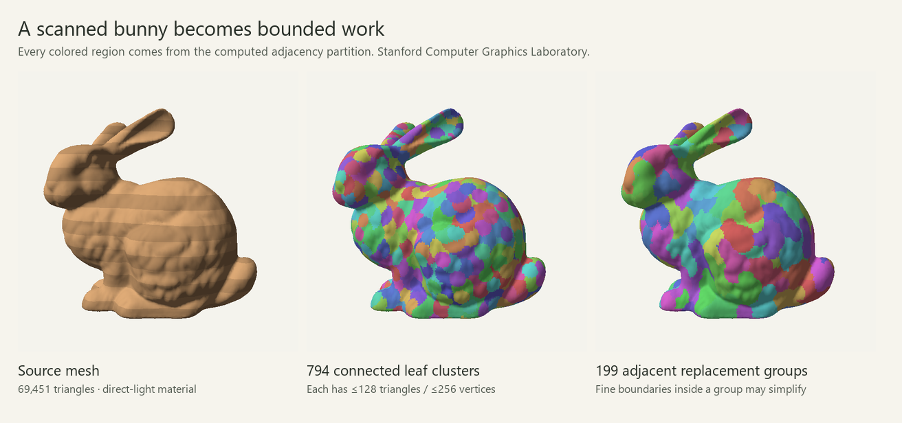
We deliberately begin with a static, opaque surface without authored UV seams, skeletal deformation, or masked coverage. That is a useful engineering boundary, not an assertion that these features are unimportant. The first implementation must establish that its geometry replacement preserves coverage and that its visibility identity recovers the correct surface. Once those contracts are stable, additional attributes and programmable coverage can be added with tests that isolate their effect. Otherwise a hole caused by an invalid LOD transition can easily be misdiagnosed as a material or lighting problem.
The rest of the experiment follows one chain of responsibility. Construction creates alternatives; selection chooses a compatible subset; culling removes alternatives that cannot affect the view; rasterization chooses a surface at each sample; material evaluation interprets that surface; lighting computes its outgoing radiance. A triangle count belongs to construction or selection. A sample identity belongs to visibility. A roughness value belongs to a material. A shadowed radiance value belongs to lighting. Keeping these answers separate is the main architectural lesson to carry into Arda.
Build the same bunny in Unreal
The engine experiment imports the normalized OBJ into /Game/Labs/Bunny/StanfordBunny, enables Nanite on the static mesh, builds its derived resources, and places it in a lit scene. This invokes the actual local Nanite builder. The CPU tree shown above is not imported as a prebuilt Nanite hierarchy: Unreal builds its own representation from the source mesh. That separation lets us compare mechanisms without pretending that our teaching format is an Unreal asset format.
The native resource inspection records 69,451 build input triangles, 34,834 input vertices, 1,133 clusters across hierarchy levels, 23 hierarchy nodes, eight page-state records, including one root page. The PLY declares 35,947 vertices; import/build processing does not guarantee that unused or coincident source entries survive as distinct build vertices. The 1,133 value is an asset hierarchy count, not the number of clusters drawn by this camera. These counts must not be compared directly with the CPU lab's leaf-cluster count as if they measured the same thing.
The capture uses DX12, Shader Model 6 and r.Nanite.MaxPixelsPerEdge=1. That engine control is not the reference lab's conservative correspondence threshold. The engine build data and exact capture modes are in the Nanite capture report. The source, project configuration and native inspection bridge are supplied with the reproduction scripts.
Small clusters are useful only if their boundaries remain compatible
The first step toward local LOD is to partition a mesh into clusters. A cluster is a bounded group of nearby geometry with metadata that makes it manageable as a unit. For the triangle path in the inspected engine, shared definitions encode a maximum of 128 triangles and 256 vertices per cluster. Those numbers describe capacity, not a promise that every cluster is exactly full. The limit keeps work and storage bounded and makes it possible to organize GPU processing around a known upper size. The source establishes these constants in NaniteDefinitions.h.
Suppose the wall is initially divided into four adjacent clusters, A through D. To make a coarser version, one might independently remove vertices from each cluster until it has half as many triangles. But two neighboring clusters share a geometric boundary. If A changes that boundary and B does not, their surfaces no longer meet. The renderer has created a hole even though each cluster's internal simplification looked reasonable. This is a representation correctness problem, not an antialiasing problem.
The obvious repair is to freeze every vertex on every cluster boundary. Now independent simplification cannot pull those shared edges apart. Unfortunately, a hierarchy that preserves the same boundaries forever eventually spends most of its coarse triangles representing boundaries that should have vanished. Imagine a long line of tiny stone chips lying along the original partition between A and B. At a distance where the entire wall should be nearly flat, the frozen partition still demands enough vertices to preserve all those chips.
Nanite's construction solves this by simplifying groups of clusters together. Inside one group, old boundaries become interior edges and can be simplified. The group's outside boundary stays constrained so that it remains compatible with its neighbors. The simplified result is partitioned into new clusters, and the next grouping can put an old outer boundary inside a new group. This alternation prevents an arbitrary original partition from becoming a permanent geometric obligation.
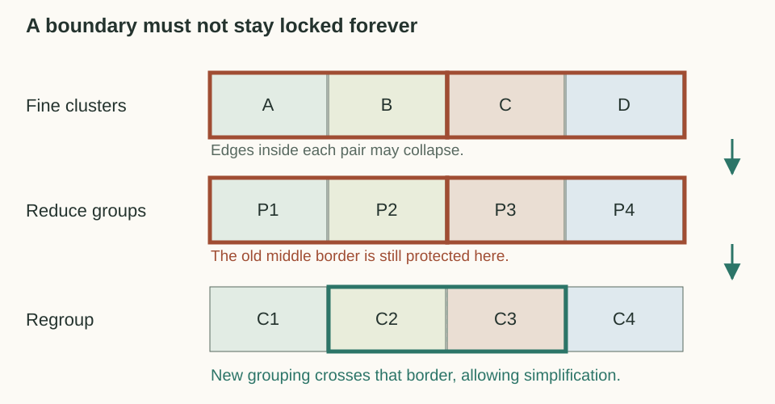
The current builder exposes this reasoning directly. FCluster::SimplifyTriangles walks external edges and locks their endpoint positions before reduction. FClusterDAG::ReduceGroup merges a group's children, simplifies the result, splits it back into bounded clusters, and assigns the parents shared LOD data. These are not incidental class names: they reveal the construction invariant that the runtime will later depend on. See the external-edge constraints and the group reduction and parent metadata.
A simplifier also has to account for more than position. The wall's texture coordinates identify where a brick texture is sampled; its normals control reflected light; material boundaries can separate stone from metal. A triangle reduction that minimizes only positional displacement can ruin appearance. In practice, the builder has attribute-aware costs and settings, and some data cannot be interpolated as though it were an ordinary continuous coordinate. This is why authoring semantics still matter even in an automatic geometry pipeline.
Each coarse result records an error measure relating it to the finer geometry. Conceptually, this is a bound or conservative estimate of the spatial deviation introduced by replacement. The runtime projects that error into the view to decide whether the replacement is acceptable. The current reduction propagates child errors upward and forces parent error values to respect the grouped construction. Its implementation explicitly takes maxima while building the parent data. Without that monotonic relationship, traversal could accept a coarse approximation that claims to be more accurate than a descendant despite having discarded more information.
The triangle explanation is the simplest entrance into Nanite, but this engine checkout contains additional curve and voxel shape-preservation branches in the same builder. Their existence is visible in ReduceGroup; it is not evidence that every content type on every platform automatically uses those paths. The stable lesson is the build/runtime contract: the build stores a hierarchy of compatible alternatives with error and bounds, and runtime selection must obey those relationships. When reading newer Nanite code, preserve that contract while checking which geometry branch the asset actually built.
Partition triangles, then make replacement regions
Begin with the triangle adjacency graph. Each triangle is a graph vertex. Two graph vertices are adjacent when their mesh triangles share an undirected edge, represented by the sorted pair of endpoint indices. This graph is an intermediate construction tool; it is not the geometry hierarchy eventually traversed for the camera. On the bunny, the code builds the edge-to-face map once, obtains neighboring faces, and grows connected regions from deterministic seed triangles. Candidate neighbors nearest the seed centroid are considered first. A region stops before exceeding 128 triangles or 256 distinct vertices.
This simple greedy partitioner produces 794 clusters. Their average occupancy is below 128 because disconnected regions, boundaries, and the chosen growth heuristic prevent perfect packing. That result is informative: a capacity is not an occupancy target guaranteed by the representation. Unreal's triangle capacities are defined in NaniteDefinitions.h, but its graph partitioner and grouping strategy are more sophisticated than this laboratory's centroid-prioritized traversal. Matching a capacity does not make the two partitioners equivalent.
A cluster contains triangles and local vertex references; it also needs bounds and enough metadata to be culled, decoded, and associated with an approximation error. The builder's Nanite::FCluster is a mutable construction representation. The similarly named shader structure is a decoded runtime view of packed data. Treating those as one universal C++ object would confuse asset-building ownership with GPU access. The following fields show what the builder is maintaining before compression. These are selected fields, not a promised binary layout. The definition is the authority.
What the builder's FCluster provides
| Information | Representative fields | Why construction needs it |
|---|---|---|
| Geometry and appearance association | Verts, Indexes, NumTris, MaterialIndexes | Describe the current approximation and preserve the material assigned to each triangle. |
| Boundary constraints | ExternalEdges, NumExternalEdges | Mark edges whose positions must remain compatible with neighboring replacements. |
| Extent and approximation quality | Bounds, SphereBounds, LODBounds, LODError, ParentLODError, EdgeLength | Supply geometry bounds, LOD decisions, and projected raster-size reasoning. |
| Construction relationships | GroupIndex, GeneratingGroupIndex, MipLevel | Relate an approximation to the groups that consume and produce it. |
| Encoding work | QuantizedPositions, QuantizedPosPrecision, PageIndex, StripIndexData | Prepare a runtime representation rather than uploading the mutable builder object directly. |
Next, construct a graph between clusters using shared exterior edges. A group begins with one cluster and repeatedly adds an adjacent cluster with the greatest shared-edge count, up to four children in this laboratory. When a disconnected remnant has no adjacent candidate, a nearby region can join the group; disconnected geometry remains disconnected during simplification. Four is a teaching choice, not Nanite's production group-size constant. What matters is that the group has a known exterior and that the replacement covers the same region of the original mesh.
Merge a group's child geometry by shared vertex identity. An edge used by exactly one triangle in the merged region lies on its exterior. Its endpoints are locked. An old cluster boundary shared by two children is now inside the merged region and can be simplified. This is the mechanical answer to the seam problem: changing resolution does not give one side permission to move the shared exterior. It also explains why grouping is useful. Independently simplifying every original cluster would keep too many small boundaries forever.
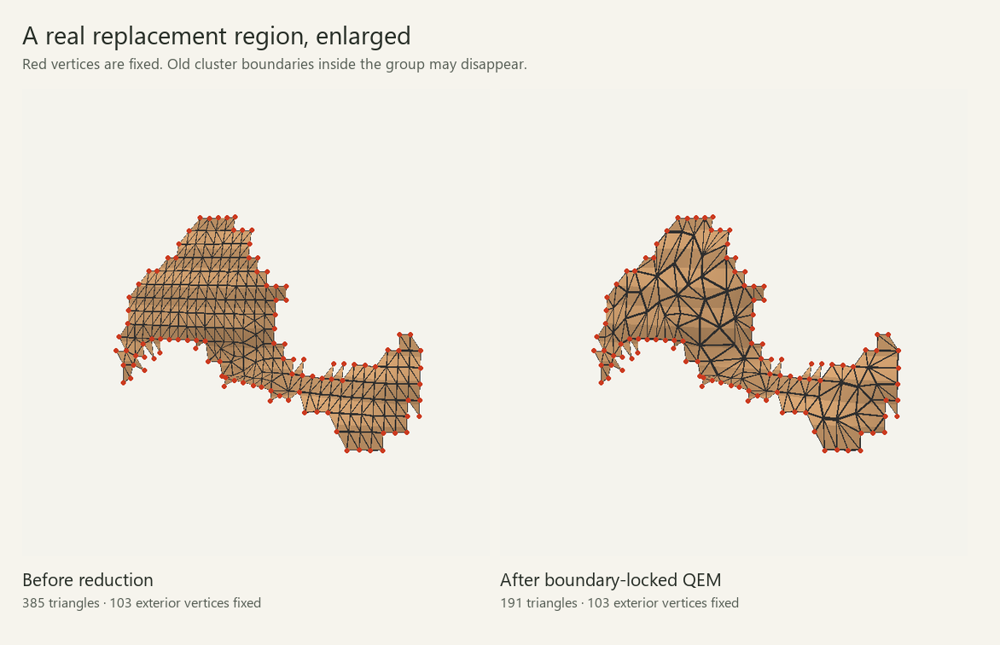
Unreal exposes the group-level contract in FClusterGroup. Its children are cluster references, and its bounds and parent error coordinate replacement decisions. The laboratory retains a strict tree of such regions to keep compatibility easy to prove. Unreal can repartition the simplified output and regroup it across earlier boundaries, which creates the richer cluster DAG developed in the hierarchy chapter. A tree is an implementable starting point, but it can retain awkward boundaries and overlarge coarse regions that the production construction is designed to avoid. Compare the group definition and the reduction implementation.
What FClusterGroup provides
| Fields | Meaning | Practical use |
|---|---|---|
Children | The finer cluster references being replaced together. | Defines the replacement relationship; it is not a draw-call list. |
Bounds, LODBounds | Geometric and LOD-related spatial support. | Coordinate decisions for children that must transition coherently. |
ParentLODError, MipLevel | Error of the coarser replacement and construction level. | Maintain ordered approximation decisions. |
PageRangeKey | Association with encoded page ranges. | Connect compatibility to the data that must be resident. |
MeshIndex, AssemblyPartIndex, bRoot, bTrimmed | Asset association and construction state. | Keep mesh/assembly identity and trimming/root behavior distinct from geometry. |
Derive the simplification decision instead of guessing it
An edge collapse replaces endpoints by one position , updates incident triangle indices, and removes triangles that become degenerate. We need a scalar cost for choosing an edge and a replacement position. The classical quadric-error idea is to measure how far the candidate position moves from the supporting planes of nearby triangles. The following derivation states the version implemented here. The historical attribution is Garland and Heckbert's quadric error method; the area weighting, boundary rules, finite candidate fallback, and displacement envelope below specify this laboratory's own implementation choices.
For a triangle with positions , form its unit normal . Its plane is , where . Because the normal has unit length, is signed distance to that infinite plane. Introduce homogeneous vectors and . Squaring the distance gives a quadratic form:
LaTeX source
E_\pi(x)=(n^Tx+d)^2=(\pi^T\bar x)^2
=\bar x^T(\pi\pi^T)\bar x.Let be triangle area. Accumulate at each vertex. The candidate collapse receives , including the accumulated history already attached to either endpoint. Shared incident planes can therefore contribute more than once; this is the specified accumulated cost, not a fresh, uniquely weighted surface integral. Each is symmetric and positive semidefinite because it is a nonnegative sum of outer products. Decompose it into a 3-by-3 matrix, a vector, and a scalar:
LaTeX source
Q=\begin{bmatrix}A&b\\b^T&c\end{bmatrix},\qquad
E(x)=x^TAx+2b^Tx+c.LaTeX source
\nabla E(x)=2Ax+2b=0
\quad\Longrightarrow\quad Ax=-b.If is invertible, solving this linear system gives the unconstrained minimizer. If all incident planes are parallel, motion along the plane is poorly constrained and is singular. The laboratory then compares the two endpoints and the midpoint. Even with an invertible system it rejects a solution implausibly far from the original edge and compares the remaining finite candidates. A production implementation needs scale-aware numerical conditioning; an arbitrary determinant threshold is an acceptable explicitly bounded experiment, not a universal asset importer.
Boundary locking adds a hard constraint. If one endpoint is locked, the candidate position must equal that endpoint. If both endpoints are locked, this lab refuses the collapse. Before accepting an interior-edge candidate, it checks the full local simplicial link condition: the intersection of the endpoints' links must equal the edge's link. In a triangle complex, a vertex link contains both neighboring vertices and opposite edges. The common neighboring vertices must be exactly the edge's opposite vertices, and the two vertex links must share no edge. Checking only neighboring vertices is insufficient: a tetrahedron passes that weaker test but collapsing one edge would create duplicate opposite-winding faces. The regression suite retains that tetrahedron unchanged while allowing a legal octahedron reduction. These local checks assume valid input topology; they are not a repair algorithm for arbitrary nonmanifold imports.
The simplifier also rejects a collapse whose surviving triangles invert or approach zero area and verifies that no two output triangles have the same unoriented vertex triple. The lowest cost is considered first using a heap. Endpoint version numbers invalidate stale heap entries after surrounding geometry changes.
Formally, for a simplex in the triangle complex , its link is the set of simplices disjoint from that form a simplex together with it. This is the local combinatorial condition being checked, following the terminology of Dey, Edelsbrunner, Guha, and Nekhayev:
LaTeX source
\operatorname{Lk}_K(\sigma)=\{\tau\in K:\tau\cap\sigma=\varnothing,\ \tau\cup\sigma\in K\},\qquad
\operatorname{Lk}_K(a)\cap\operatorname{Lk}_K(b)=\operatorname{Lk}_K(ab).Cost and error are different quantities. With area weighting, has units of length to the fourth power: area times squared distance. Taking its square root does not produce a length. Even an unweighted plane-distance sum is not automatically a maximum surface-deviation bound. A candidate can remain near supporting planes while moving along them. Therefore this lab does not feed quadric cost into the screen-space LOD test and call it geometric error. Unreal likewise has explicit geometric and attribute handling inside its simplifier; its returned error cannot be inferred by reading this small implementation. The actual builder sets attribute weights and edge behavior before simplification.
Instead, track a conservative displacement envelope. Initially a representative vertex has radius zero. If its current position is , every original vertex assigned to it lies within radius . After replacing by , the triangle inequality gives a valid new radius:
LaTeX source
\|p-x\|\leq\|p-a\|+\|a-x\|\leq r_a+\|a-x\|,LaTeX source
r_x=\max\big(r_a+\|a-x\|,\ r_b+\|b-x\|\big).For a triangle point represented by nonnegative weights summing to one, its mapped-point displacement obeys . This bounds the defined vertex-collapse correspondence, including triangles that map to an edge, rather than measuring the nearest point on the simplified surface. Add the largest child envelope when reducing a parent region to account for earlier levels. The bound is deliberately pessimistic. It is useful because its meaning is explicit, but the selection experiment will expose how badly a pessimistic bound can spend triangles.
A level of detail becomes a valid cut through a graph
Grouping and repartitioning change the shape of the hierarchy. A simple tree gives each child one parent. Here, several coarse clusters jointly replace the same group of finer clusters. A fine cluster can therefore participate under more than one coarse cluster in the dependency relation. The result is a directed acyclic graph, or DAG: edges point from one resolution toward another, paths can share descendants, and the build does not create cycles that lead back to the same resolution.
There is a practical difference between saying “a hierarchy” and understanding this graph. In a tree, drawing one parent instead of its children is locally straightforward. In the Nanite graph, a coarser representation may consist of a collection of parents that must agree about the replacement. Drawing one coarse parent and some arbitrary subset of its finer shared descendants can duplicate geometry or omit it. The valid state is a cut: a set of selected alternatives that covers the required surface once while respecting the construction dependencies.
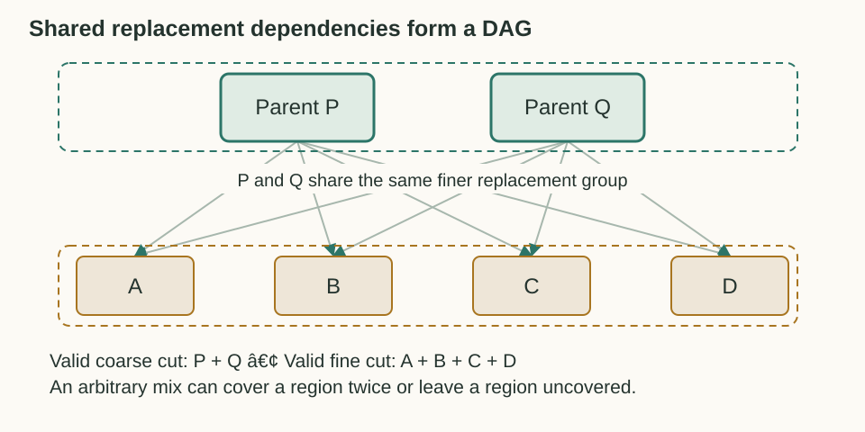
To understand the view test, use a small-angle approximation. If an approximation has world-space error e, lies about distance z along the view, and the projection has focal scale f measured in pixels, the projected error is roughly f e / z. With f equal to 1,000 pixels and e equal to 0.002 meters, the error is about one pixel at two meters and one tenth of a pixel at twenty meters. These are explanatory numbers, not Unreal's complete culling equation.
The complete implementation must deal with bounding volumes, nonuniform scale, perspective, orthographic views, deformation, and conservative estimates over an entire cluster. It does not merely evaluate the distance from the camera to one vertex. In NaniteClusterCulling.usf, hierarchy traversal compares projected scales with stored LOD errors and then chooses raster work. The view includes its own LOD scale. The source's use of bounds and scale factors is the implementation of the same geometric idea, adapted to cases that a one-line formula leaves out.
For a wall stretching away from the camera, near groups can select finer replacements while far groups remain coarse. The grouping constraints limit how independently these choices can happen, but they still allow much finer control than one LOD for the entire wall. A shadow view may select differently from the camera because its projected footprint and quality target differ. Thus “the mesh is at LOD 2” is usually the wrong description of a Nanite frame. A more accurate description is that a particular view selected a set of clusters.
The hierarchy used to accelerate traversal should also be distinguished from the dependency graph used to define compatible simplification. Bounds let the GPU reject regions without visiting every cluster. Group relationships define which geometry can replace which. They cooperate, but they answer different questions. An engineer implementing a similar system can use one data structure to encode both compactly, yet should keep the logical responsibilities separate. A bug in traversal bounds causes missing or excess work; a bug in replacement dependencies can create discontinuities even when every visibility test is correct.
Finally, an acceptable error does not mean all differences become invisible. A projected threshold is an engineering control, and visibility depends on motion, silhouette, material, contrast, and temporal reconstruction. The source default of r.Nanite.MaxPixelsPerEdge is one, while other settings influence hardware raster thresholds and dynamic scaling. These values are quality and scheduling controls, not a proof that geometry error is exactly one pixel everywhere. The current controls make that distinction explicit through separate LOD and rasterization parameters.
Turn successful reductions into a selectable hierarchy
The first grouping reduces 69,451 triangles to 34,859. Repeating adjacency grouping and reduction gives 17,561, 8,963, 4,583, and then 2,291 triangles once all regions meet at a common ancestor. Further reductions of that root can create still coarser alternatives while retaining the original scan boundaries. The source model is never overwritten: every parent has its own geometry and retains its child references. Runtime selection needs alternatives simultaneously available, not a single mesh destructively simplified to the current camera.
Each replacement region is partitioned again into bounded clusters for raster work. This is why a region count and a cluster count are different statistics. One parent region may require several clusters to store its coarse approximation. In the laboratory those clusters are selected together as the region's replacement. They do not independently select children. That restriction makes a tree cut straightforward and avoids pretending that arbitrary choices among repartitioned clusters are automatically compatible.
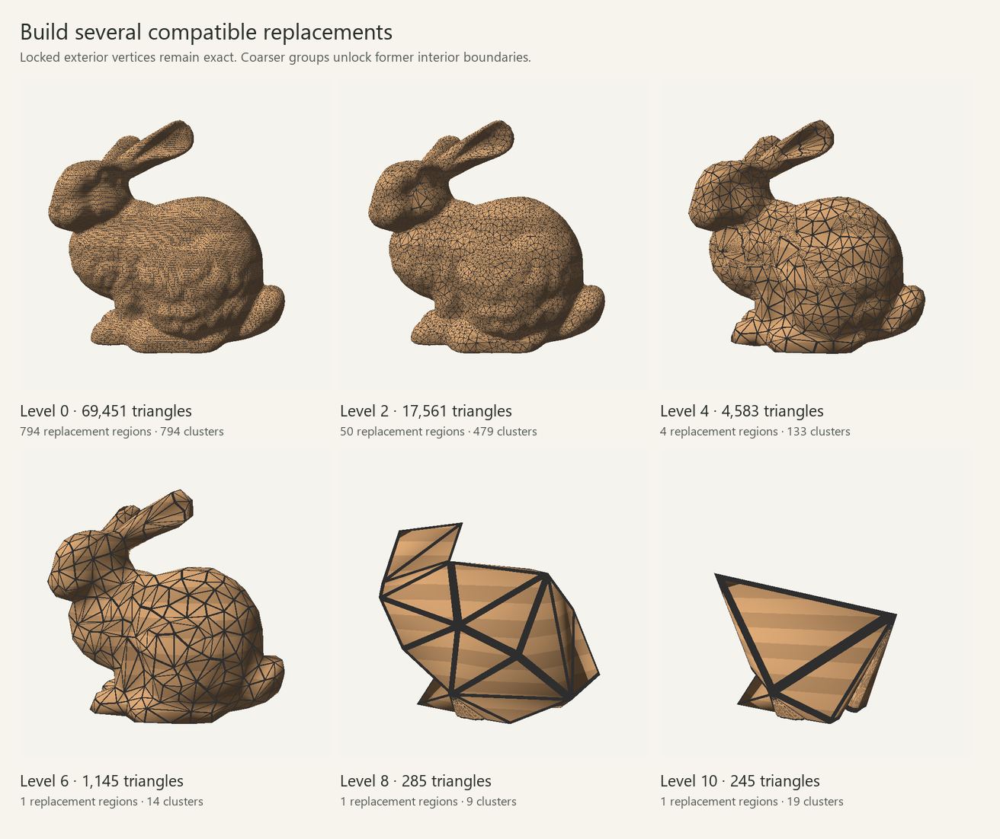
The root's further reductions reach 1,145, 571, 285, 247, and finally 245 triangles. At that point the implemented boundary, topology, and normal constraints permit no further reduction. The builder stops rather than deleting scan boundaries to satisfy its 128-triangle target. The final root still occupies several clusters because the greedy connected partitioner encounters fragmented regions. A failure to reach a target is a valid reported result; it must not silently invalidate the construction contract.
A valid cut obeys two conditions. Every leaf region must be covered by exactly one selected ancestor, and no selected node may have a selected descendant. A recursive traversal satisfies both by choosing either a node or all the required descendants beneath it. The implementation enumerates the original leaf IDs covered by each selected region and asserts exact, duplicate-free coverage. That is more useful than asserting that the traversal returned a nonempty list: a list containing both a parent and one child can look plausible while double-rendering part of the surface.
Boundary preservation supplies the second half of the correctness argument. Different selected regions can have different resolutions, but their common boundary descends from exterior edges locked during every replacement that exposed that boundary. The code compares the entire exterior edge set before and after every group reduction and compares the associated positions exactly. This proves the construction invariant implemented here. It does not prove the absence of every floating-point raster seam, self-intersection, or shading discontinuity in arbitrary imported content. Those require their own tests.
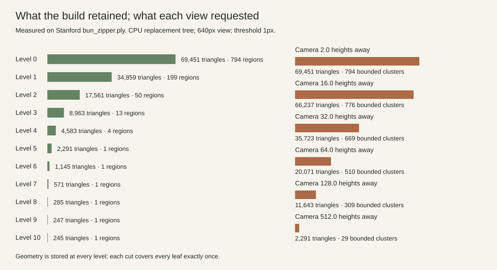
The actual Nanite construction goes further. FClusterDAG::ReduceGroup merges children, simplifies, partitions the result into parents, and propagates a shared parent error. Earlier boundaries can move inside later groups. The relationship is a DAG because clusters and replacement groups cannot be understood as an ordinary independent-child mesh tree. A production implementation must preserve the group transition invariant when encoding and traversing this structure. Starting with a tree is useful precisely because it makes the missing capability obvious: the laboratory can explain compatibility without claiming production-quality partition freedom.
After construction, Unreal encodes data for streaming and GPU access. The CPU's mutable vectors are replaced by packed counts, offsets, quantization information, bounds, and material references. The builder's rich object and the runtime's packed record should have different owners and different APIs in Arda. A GPU decoder must be able to reconstruct every field its culler, rasterizer, and material evaluator expect; changing bit packing is a producer-and-consumer change, not a local storage optimization. FPackedCluster shows that contract.
What FPackedCluster provides to GPU consumers
| Consumer | Information packed into the record | What would break if it disagreed with the decoder |
|---|---|---|
| Geometry decode and rasterization | Vertex/triangle counts, position/index offsets, position start and precision, bits per index. | Incorrect vertex addresses or reconstructed positions. |
| Culling and LOD | LOD sphere, box center/extent, error, edge length, relevant flags. | Wrong detail selection or disappearing visible geometry. |
| Material evaluation | Attribute offsets, decode-information offset, UV count and bit offsets, tangent/skinning flags, material information. | A correct visible identity reconstructing the wrong surface properties. |
| Additional representations | Extended-data, brick/curve information and parent-error data in this checkout. | Assuming every runtime cluster is an identical triangle-only payload. |
Look at Unreal's own clusters and groups
Now switch the real engine asset to the cluster visualizer. Colored patches identify selected cluster regions in the current view. The following group view emphasizes a different relationship: the groups used by Nanite's hierarchy. Colors are diagnostic identities, not material colors or error magnitudes. Compare these shapes with the CPU partition above, and expect them to differ: Unreal uses its own partitioner, simplification, repartitioning, compression and hierarchy construction.
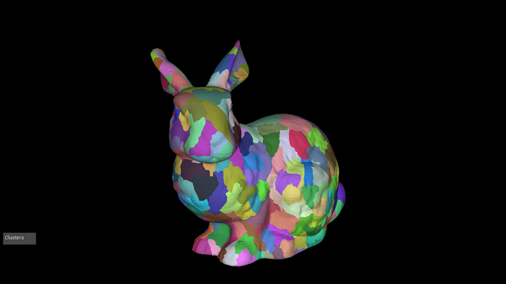
Clusters visualization. The CPU leaf partition is a separate result, with a deliberately simpler hierarchy. Open image at full size.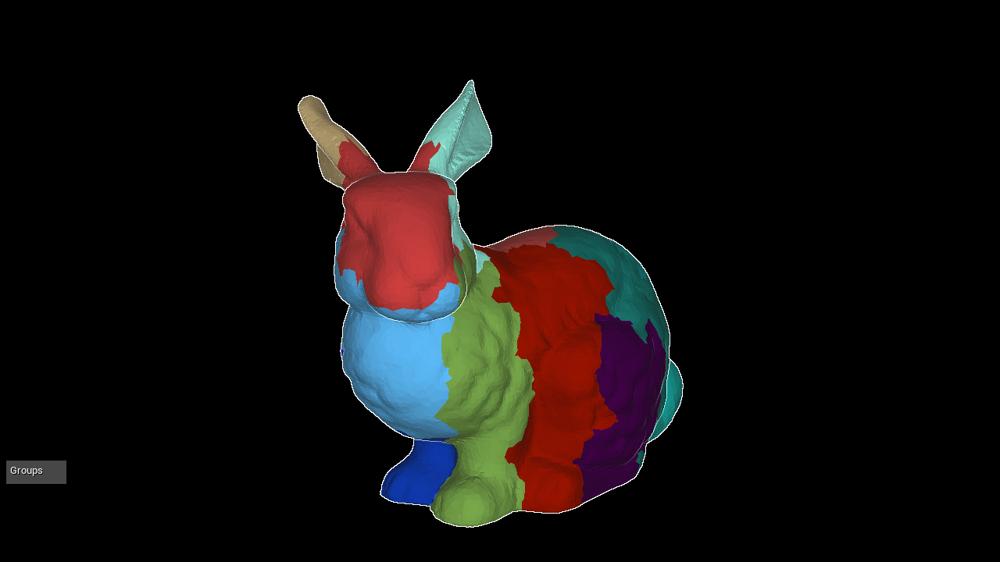
Groups visualization. A replacement group and an individual bounded cluster are different units. Open image at full size.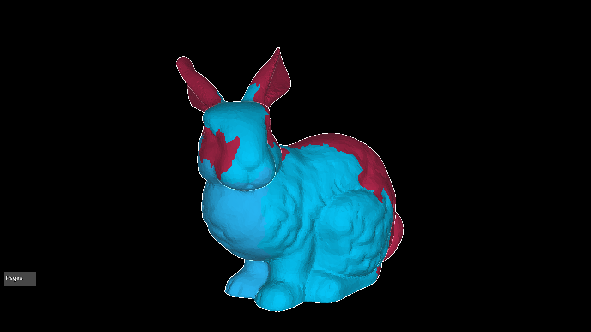
Pages visualization. Spatially adjacent selected work can refer to different storage pages; a page is a streaming allocation unit, not a semantic object. Open image at full size.Derive the camera's error test and inspect the actual cut
Consider a perspective camera looking along positive camera-space Z. For a square-pixel image of height and vertical field of view , the focal length in pixels is . Ignoring an irrelevant image-center offset, the projection is . At the center of the image, a small transverse displacement projects to approximately pixels. This common expression is an approximation; a finite displacement can also change depth, and off-axis points respond differently.
Differentiate the projection to make those assumptions explicit. Its Jacobian maps a small three-dimensional displacement to a two-dimensional displacement:
LaTeX source
J_s(X,Y,Z)=\frac fZ
\begin{bmatrix}1&0&-X/Z\\0&1&-Y/Z\end{bmatrix}.Writing , the two eigenvalues of are and . Therefore its largest singular value is . Integrate this derivative along the segment from an original point to its mapped replacement. If that segment stays at positive depth and has length at most , then
LaTeX source
\|s(p')-s(p)\|
=\left\|\int_0^1J_s(p+t(p'-p))(p'-p)\,dt\right\|
\leq\varepsilon\sup_{t\in[0,1]}\|J_s\|_2.For a replacement region with camera-space sphere center , radius , and displacement envelope , use . The entire correspondence segment is enclosed by the sphere enlarged by the envelope. An upper bound on transverse radius is . Provided , this gives the laboratory's acceptance test:
LaTeX source
e_{\rm px}\leq
\frac{f\varepsilon}{z_{\min}}
\sqrt{1+
\left(\frac{\sqrt{c_x^2+c_y^2}+R+\varepsilon}{z_{\min}}\right)^2}
\leq\tau.Here pixel, , and . A production culler must handle near-plane intersection separately, conservatively descending or clipping; the captured laboratory camera sweep keeps accepted bounds away from that singularity. For a general instance transform, a conservative world-space error multiplier is the largest singular value of its linear part. For uniform scale this is simply the absolute scale. Perspective projection belongs after that transformation. An orthographic camera instead has a depth-independent linear projection scale.
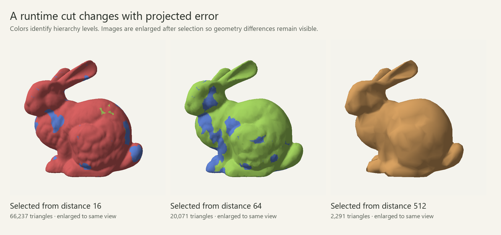
At distances 2, 16, 32, 64, and 128 bunny heights, the measured selected triangle counts are 69,451, 66,237, 35,723, 20,071, and 11,643. These are not competitive Nanite budgets. The correspondence envelope includes tangential vertex motion that may barely change the nearest geometric surface, and errors accumulate conservatively through the tree. At distance 64 the bunny covers only 122 samples in the 640-by-640 image but the lab still submits 20,071 triangles. This is valuable evidence of an overly pessimistic representation, not a result to hide behind a good-looking enlarged screenshot.
Unreal's selection uses its own stored errors, projected-edge scales, view LOD scale, bounds, and deformation/instance information. ShouldVisitChildInternal tests a hierarchy slice's parent error; SmallEnoughToDraw tests a cluster and also participates in hardware-raster preference. The expressions should be read together with their scale conventions rather than replacing them with this lab's formula. The shader implementation shows the actual predicates. The actionable principle is that the builder defines the meaning of error and the runtime must project that same meaning.
What FHierarchyNodeSlice provides during traversal
| Fields | Question answered |
|---|---|
LODBounds, BoxBoundsCenter, BoxBoundsExtent | Where is the child support, and how should its error be projected? |
MinLODError, MaxParentLODError | Which approximation interval can this subtree represent? |
ChildStartReference, NumChildren, bLeaf | Does the child reference another node or a page/cluster range? |
ResourcePageRangeKey, bLoaded, bEnabled | Is the relevant representation available and enabled? |
AssemblyTransformIndex, NumBones, BoneIndicesOffsetInDwords | Which assembly or deformation metadata accompanies the bounds? |
The CPU lab keeps all alternatives resident. A streaming implementation must add another acceptance condition: the desired finer replacement is usable only when the required pages and dependencies are installed. Otherwise retain a complete resident coarse cut and issue requests. Missing detail should reduce quality temporarily, not remove geometry. Unreal's FPageStreamingState contains bulk offsets/sizes, page size, dependency start/count, hierarchy depth, and flags; those are storage/dependency facts, not another copy of the material. Its definition provides a concrete starting point for a separate streaming layer.
What FPageStreamingState provides
| Fields | Question answered |
|---|---|
BulkOffset, BulkSize, PageSize | Where is the encoded payload, and which sizes describe its stored/page representation? |
DependenciesStart, DependenciesNum | Which entries describe pages that this page depends on? |
MaxHierarchyDepth | What hierarchy-depth information accompanies the page? |
Flags | Which page-state flags qualify its interpretation? |
Move the real camera and compare the selected triangles
The next pair keeps the source asset and pixel-error setting fixed while moving the camera four times farther along its viewing direction. The smaller screen footprint permits coarser selected geometry. Inspect the triangle pattern as well as the silhouette. These are real selected-triangle diagnostics; they are not wireframe drawings of a separately generated low-poly bunny. The screenshots demonstrate view dependence, but do not expose every traversal predicate or report a precise runtime triangle total.
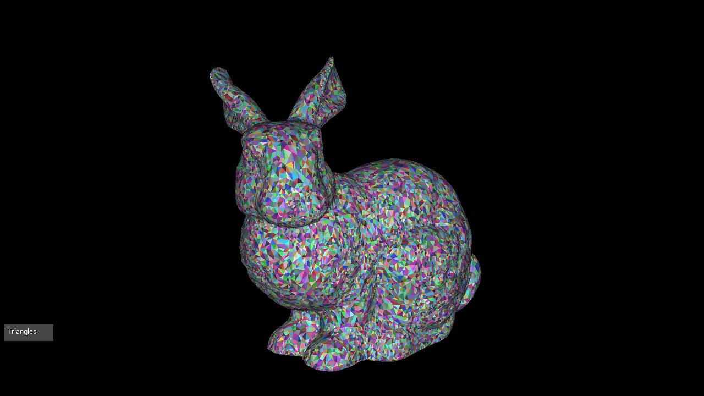
Triangles mode. Open image at full size.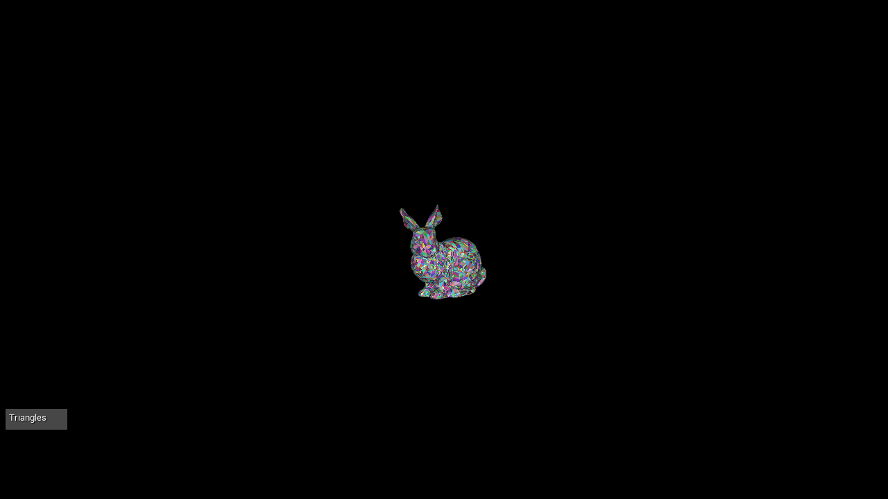
The same hierarchy makes geometry demand-paged
Once a coarse representation can stand in for finer geometry, the finer data no longer needs to remain resident merely to keep the object drawable. The engine can retain a coarse resident representation and request additional detail when a view needs it. This is the virtual part of virtualized geometry: an asset has a logical addressable representation larger than the detail currently present in GPU memory.
Storage is organized into pages, which are transfer and residency units containing encoded cluster data and associated information. A cluster is a geometry-processing unit; a page is a memory-management unit. Confusing the two produces bad accounting. One page can carry several clusters, and making one desired cluster available can involve loading data that shares its page. Current shared constants reserve 32 KiB for root GPU pages and 128 KiB for streaming GPU pages. These are GPU page sizes in this source revision, not a prediction of an asset's compressed disk size. The definitions distinguish them.
Encoding the page is part of the design rather than a final compression checkbox. Vertex positions can be quantized onto a grid: instead of storing unrestricted floating-point values, store integers plus the information needed to reconstruct positions at a chosen precision. A cluster whose coordinates occupy a small range can use fewer bits for that range. But two clusters that meet at a boundary must reconstruct compatible positions; independently rounding the same point by incompatible rules could reopen the cracks that simplification carefully avoided. The current uniform-grid position quantization makes the precision decision explicit.
Other attributes have different redundancy. A unit-length normal lies on a sphere, so three unconstrained floating-point numbers spend more information than the direction fundamentally needs. Octahedral encoding maps that direction to a compact two-dimensional representation; the current normal encoding routines then quantize its coordinates. Texture coordinates, material information, and triangle connectivity need their own encodings because their semantics differ. Reducing bytes therefore involves several field-specific choices, each with quality and decoding costs, rather than one generic compression ratio applied to a raw vertex buffer.
The storage-friendly page and the GPU-consumable page need not have identical layout. Transcoding converts the streamed representation into the form that runtime decoding expects. Unreal's page uploader declares GPU transcode work with independent and parent-dependent passes. This makes page dependencies operational: some decoding work relies on related information being available. When estimating memory and bandwidth, distinguish source asset size, cooked disk data, staging transfers, resident encoded GPU pages, and temporary decoding or installation work. A reduction in one number does not automatically imply the same reduction in every other number.
Imagine approaching the far wall. The GPU visits the hierarchy and discovers that the resident coarse cut is no longer detailed enough. It emits requests for finer pages. The CPU-side streaming manager receives feedback, schedules reads, prepares data, installs ready pages, and updates references so that subsequent traversal can use them. The camera's current frame cannot wait for an arbitrary storage request to complete. It continues to draw a valid resident representation while the requested detail is in flight.
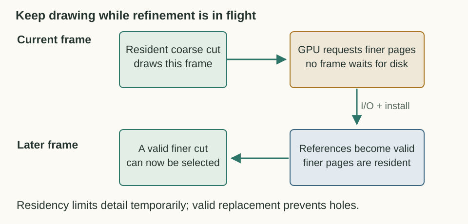
Page installation is more subtle than copying a byte range. Encoded hierarchy references and cluster dependencies must become valid together. A pointer into an evicted page cannot remain available to traversal, and newly installed descendants cannot be selected before the required dependency information is consistent. Unreal's streaming manager therefore has explicit pending-page queues, installation work, root-page accounting, and hierarchy updates. The streaming configuration and initialization show bounded pending requests and per-update installation limits rather than an unbounded “load everything requested” operation.
In the inspected initialization, the streaming pool is 512 MiB, maximum pending pages is 128, and maximum page installations per frame is 128. They should be read as default controls of this checkout, not universally appropriate project settings. More memory can reduce eviction and reload traffic, but it cannot fix an asset with pathological geometry distribution. A larger installation allowance can help a fast camera catch up, but it moves decompression, upload, and update work into a more concentrated frame budget.
Residency constraints and visual error constraints are related without being identical. The ideal cut for a view describes the detail the picture would benefit from. The available cut describes what can be safely selected from installed data. When the camera teleports, these may differ sharply. The user sees detail refine over time even if rendering remains stable. When a hierarchy is poorly built or dependencies are mishandled, the user may instead see holes. Those are different failures and should have different debugging tools.
This is also why Nanite streaming should not be confused with Unreal's fallback mesh. A coarser resident Nanite representation participates in Nanite's own hierarchy. A fallback mesh is an alternate conventional geometry representation used by consumers or platforms that do not use the full Nanite path. Later, hardware ray tracing may intersect such a fallback mesh while the camera displays Nanite clusters. The existence of both mechanisms is necessary, but calling them both “fallback LOD” hides the fact that they live in different rendering systems.
For a future implementation, a useful test is a deliberately slow storage path. Move the camera quickly while constraining page installs and ensure the object remains geometrically complete. Then raise the memory budget and repeat to distinguish bandwidth pressure from residency pressure. This test asks a stronger question than “does the screenshot look right once everything has loaded?” It verifies that the representation remains coherent while its physical storage changes.
Let the GPU remove work before rasterization
A high-detail representation is only affordable if most of it is rejected before expensive processing. The GPU begins with instances and their bounds. The camera's view volume, or frustum, defines the region that can project into the image. An instance entirely outside that volume can be discarded. For surviving instances, traversal descends through bounds until it finds the appropriate visible clusters. This coarse-to-fine organization makes rejection proportional to hierarchy work rather than to every triangle in every asset.
Bounds are promises. If a box says it contains the waving leaves but the material displaces them outside it, a correct culler can reject geometry that the player should see. If the box is excessively inflated, correctness is preserved but much less work can be removed. Deformation support therefore has a culling cost even before a single displaced vertex is evaluated. This is one reason a vertex animation feature cannot be bolted onto an otherwise static renderer by modifying only the vertex shader.
Occlusion adds another opportunity. A stone arch may hide most of the courtyard behind it. After rendering depth, the renderer can build a hierarchical depth buffer, usually abbreviated HZB. Each level summarizes a larger region of the screen. A projected bound can be tested against a suitably coarse depth level; if the depth information conservatively establishes that the bound is behind already visible surfaces, the enclosed geometry need not be rasterized.
The word conservatively matters. A falsely visible cluster wastes time. A falsely occluded cluster disappears. A depth summary and comparison must respect the engine's depth convention and the entire projected bound. It is not safe to test only the bound's center against one unrelated depth sample. Unreal commonly uses reversed depth, so simplistic “smaller always means nearer” explanations are particularly misleading. The culling shaders encapsulate the appropriate depth tests rather than scattering informal comparisons across materials.
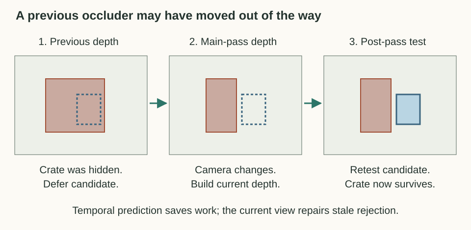
Using only last frame's depth would be dangerous. When the camera steps sideways, a previously hidden crate can become visible. Nanite's two-pass occlusion organization uses previous information for an efficient main pass and retests occluded candidates using updated depth for a post pass. In this checkout, r.Nanite.Culling.TwoPass initializes to one. The C++ control and the main/post branches of instance culling expose the intended recovery mechanism. Turning the feature off for diagnosis is not equivalent to proving that history-based rejection is always safe.
The survivor list is produced on the GPU. This avoids reading a visibility result back to the CPU merely so the CPU can issue one draw for each visible cluster. Instead, counters and indirect argument buffers describe the work to execute. An indirect dispatch or draw takes its dimensions from GPU-written memory. The command stream still exists, and CPU-side orchestration still matters, but fine-grained decisions stay next to the data that made them.
There are limits to what occlusion can accomplish. Dense foliage contains many holes, so a coarse depth summary often cannot prove that anything behind it is fully hidden. Layers of leaves may survive culling even when the final image looks like a compact green mass. Overlapping surfaces and distant disconnected details can therefore remain expensive. Nanite reduces the penalty of tiny triangles; it does not repeal the need to process competing visible candidates before deciding which sample wins.
A useful debugging experiment is to compare a courtyard wall with a similarly sized hedge. Give both similar final screen area and similar material complexity. The solid wall should permit stronger rejection of hidden interior detail and geometry behind it. The hedge may continue to generate substantial raster work because holes and layered coverage prevent conservative elimination. If the hedge is slower, that does not contradict the pixel-based motivation. It identifies a case where resolving the pixels still requires many candidate surfaces.
Move an occluder and watch history become wrong
LOD answers which approximation could be sufficient. Occlusion asks whether that approximation can contribute any visible sample. To isolate that second question, freeze the 20,071-triangle cut selected at distance 64 and move the raster camera back to distance 2 without selecting LOD again. The bunny now fills a substantial part of the image, so it is no longer the 122-sample footprint measured in the distant selection sweep. This frozen cut is intentionally not claimed to meet the original one-pixel error threshold at the closer camera. It lets the following test change only occlusion while holding geometry fixed.
Place a foreground plane over the left side of that enlarged view. At the previous frame it covers 350 columns. At the current frame it covers only 245. The newly exposed strip is a disocclusion: a region where last frame's evidence is insufficient for the current image. All main-pass, post-pass, and unculled reference images below use the same frozen cut and distance-2 camera.
The laboratory uses positive camera-space depth, with smaller values nearer and positive infinity for an empty sample. Build each parent depth texel by taking the maximum of its four children. Why maximum? A candidate entirely behind the farthest already-visible surface over its projected rectangle is hidden everywhere in that rectangle. If even one child is empty, the parent's maximum is infinity, so that parent cannot prove occlusion. Using the nearest depth instead would allow a single foreground sample to hide unrelated empty samples beside it.
LaTeX source
D_{\ell+1}(i,j)=\max_{a,b\in\{0,1\}}D_\ell(2i+a,2j+b).LaTeX source
z_{\rm nearest}(C)>\max_{q\in R(C)}D(q)
\quad\Longrightarrow\quad C\text{ is occluded over its projected rectangle.}The rectangle must enclose the whole projected cluster, and must be a lower bound on its depth. The experiment uses transformed cluster vertices to build those conservative values, chooses a mip from the rectangle size, and reads every overlapping mip texel. Fetching one convenient center texel would not prove the implication. Unreal uses reversed depth conventions in relevant rendering paths, so the reduction/comparison directions cannot be copied mechanically from this positive-depth example.
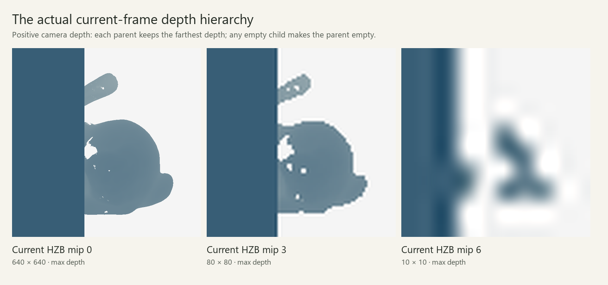
Test clusters against the previous depth pyramid, render the apparent survivors into current depth, and then retest the rejected candidates against that current evidence. This experiment starts with 510 bounded clusters: history defers 361, the main pass draws 149, and the post pass recovers 140. Before recovery, 2,520 sample depths differ from an unculled reference. After recovery, zero differ within the stated floating-point comparison tolerance. Recovery does not necessarily produce obvious empty holes: a missing front surface may reveal a back surface, yielding plausible coverage with incorrect depth and shading.
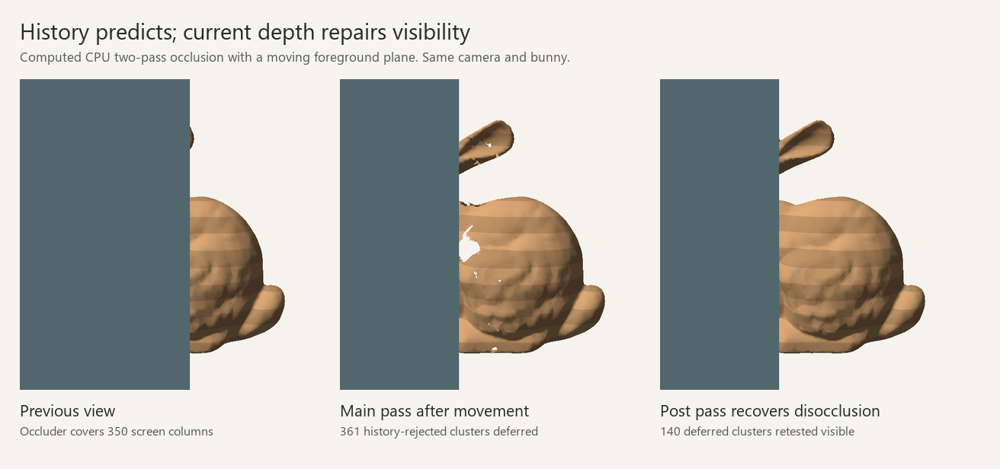
Unreal's main/post-pass culling performs the corresponding temporal recovery in its own GPU architecture. The implementation combines visibility flags, previous/current view information, instance data, and hierarchy traversal rather than submitting every cluster from the CPU. Its instance-culling branches show the explicit distinction. For Arda, the first useful correctness test is the same as this experiment: moving camera or occluder, previous-depth prediction enabled, and a current-frame unculled reference for comparison. GPU counters should then distinguish candidates, history rejects, post-pass survivors, and final raster work.
Rasterize identity first, then recover the surface
After selection and culling, a cluster still contains triangles whose screen coverage must be resolved. GPUs have dedicated hardware rasterizers, so why would Nanite also contain a software rasterizer implemented with compute shaders? The answer lies in the distribution of triangle sizes. Fixed-function hardware is extremely effective for sufficiently large triangles, but setup and pixel execution organization can become inefficient for huge numbers of tiny triangles. A specialized compute path can process small triangles with a different work distribution.
Software here means shader instructions running on the GPU, not a CPU drawing pixels one at a time. Nanite can route suitable geometry toward hardware or compute rasterization. Both paths ultimately contribute compatible visibility information. The choice is a scheduling decision informed by projected size and supported behavior, not an artistic property of the mesh. In cluster selection, hardware-raster preference is calculated alongside the LOD test, while the raster controls expose separate thresholds and the compute-rasterization switch.
Traditional opaque rendering often evaluates material properties as a fragment survives rasterization. A visibility-buffer design separates two questions: which primitive won, and what properties does it have? The visibility result stores enough identity to retrieve the winning triangle and the instance that placed it. Depth establishes ordering. Later work decodes geometry, reconstructs attributes, and evaluates the material for the visible surface. The visibility buffer is therefore an address into scene data, not an already shaded photograph.
Think of one pixel on the crate. Several wall, crate, and leaf triangles may cover it. Each candidate has a depth and an identity. The depth test chooses the nearest applicable surface. If the crate wins, later shading needs the crate's triangle vertices, its instance transform, and the material assigned to that triangle. Storing only the crate's base color would lose texture coordinates, material identity, and the information required for richer evaluation. Storing every possible property before resolving visibility would spend bandwidth and shading work on losing surfaces.
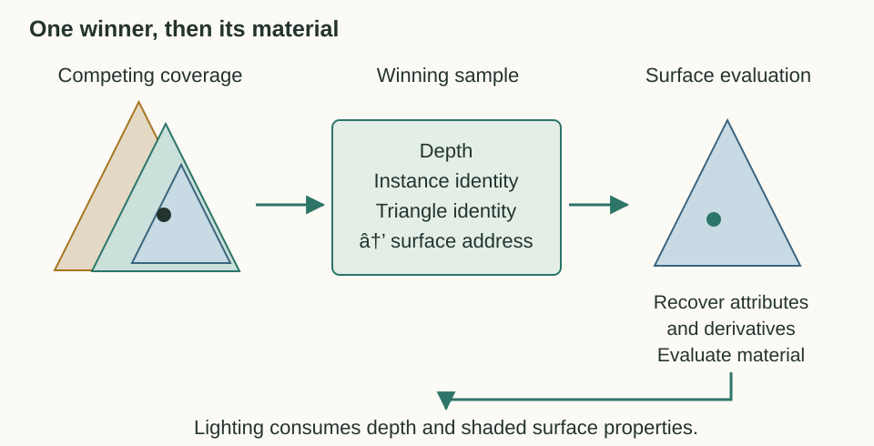
The inspected implementation includes a 64-bit visibility path whose pixel write packs an identity with depth and uses an atomic operation to select the winner. The exact packing and reversed-depth comparison are implementation details that must agree across producers and consumers. The pixel-write shader makes this contract concrete. A 64-bit write is not an invitation to hard-code a universal bit allocation into a new engine: platform capabilities and Nanite representations have evolved, while the logical requirement remains a consistent depth-and-identity result.
Reconstructing a point on a triangle introduces barycentric coordinates. For triangle vertices A, B, and C, weights a, b, and c sum to one and describe a point as aA + bB + cC. The same idea interpolates texture coordinates and other vertex attributes, with perspective correction where needed. A visible sample near A gives A a larger weight. These weights are not texture coordinates themselves; they are the recipe for obtaining the texture coordinates associated with that triangle's surface.
Texture filtering requires another piece of information: how those coordinates change across the image. A pixel shader traditionally gets derivatives from nearby shader lanes arranged in screen-space quads. A compute material pass with reordered work cannot blindly assume adjacent threads shade adjacent pixels of the same triangle. Analytic or explicitly reconstructed derivatives preserve the intended texture footprint. Otherwise, the geometry can be perfectly visible while textures shimmer or choose incorrect mip levels. Unreal's barycentric helper implementation and Nanite attribute interpolation show why recovering a surface involves more than loading three positions.
The geometry visibility result finally joins the rest of the opaque renderer through depth and material outputs. This permits Nanite and conventional meshes to coexist in one image. A game can render the stone wall with Nanite, a supported character path with its own deformation system, and translucent glass through another pass. The shared contract is what the later rendering stages can consume, not a requirement that every object use the same triangle submission mechanism.
Follow one pixel from edge equations to lighting
After selection and culling, rasterization must answer coverage and depth. The reconstruction experiment also freezes the distance-64 cut and renders it from distance 2, without the foreground occluder. This camera reset exposes enough pixels to inspect interpolation; it does not revalidate that coarse cut against a one-pixel LOD target at distance 2. For two projected vertices , define the signed edge function . It is zero on the edge and has opposite signs on opposite sides. For consistently oriented triangle vertices , divide the three opposite-edge values by the signed triangle area to obtain screen-space barycentric coordinates. A sample is inside when all three coordinates are nonnegative:
LaTeX source
\lambda_0=\frac{E_{bc}(p)}{E_{bc}(a)},\qquad
\lambda_1=\frac{E_{ca}(p)}{E_{ca}(b)},\qquad
\lambda_2=1-\lambda_0-\lambda_1.The CPU rasterizer evaluates these functions at pixel centers inside each triangle's integer bounding box. It handles either winding and skips near-plane-intersecting triangles because the experiment places all rendered geometry safely in front of the camera. It includes shared-edge equality on both incident triangles; a production rasterizer needs a consistent top-left ownership rule and fixed-point precision policy. The lab resolves equal-depth ties deterministically by traversal order. These are explicitly limited raster conventions, not a claim of bit-identical hardware coverage.
Screen-space weights cannot directly interpolate an arbitrary world-space attribute under perspective. To derive the correction, start from a point's pre-division homogeneous combination. If its original barycentric coordinates are and clip-space vertex denominators are , projection yields screen weights proportional to . Solve that relationship for , then normalize so the coordinates sum to one:
LaTeX source
\lambda_i=\frac{\beta_iw_i}{\sum_j\beta_jw_j}
\quad\Longrightarrow\quad
\beta_i=\frac{\lambda_i/w_i}{\sum_j\lambda_j/w_j}.LaTeX source
a(p)=\sum_i\beta_i a_i
=\frac{\sum_i\lambda_i a_i/w_i}{\sum_i\lambda_i/w_i}.In this camera convention . Therefore camera-space depth is . The nearest candidate stores both this depth and the triangle's integer identity. The second pass fetches the triangle vertices and reconstructs position, normals, and material inputs using the corrected weights. The lab saves the resulting depth, triangle-ID, barycentric, and overdraw arrays in its local cache so the visible image can be investigated numerically.
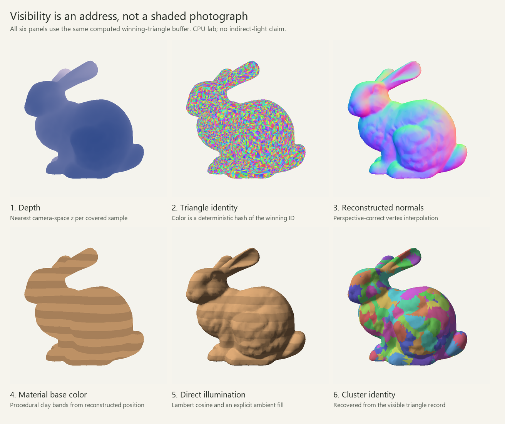
At the recorded sample , two triangles cover the sample and triangle 18,455 wins. Its fetched vertex indices are 13,677, 13,676, and 13,678. The perspective-correct weights are approximately , giving camera depth 1.651528 and local position . This is a concrete reconstruction, not a synthetic triangle drawn beside the bunny. Across visible samples, the largest measured error in the barycentric sum is in the CPU's floating-point calculation.
Unreal's visibility identity includes the selected instance/cluster context needed to decode the triangle. FVisibleCluster supplies view, instance, physical page and cluster indices, flags, assembly transform, and depth-bucket information, with virtual-shadow page coordinates for the relevant path. Its definition makes clear why a bare mesh-local triangle index is insufficient for a real scene. The 64-bit visibility write packs identity with depth and uses an atomic maximum in the supported shader path. The lab's sequential positive-depth minimum has the same logical purpose but a different representation and concurrency model.
What FVisibleCluster contributes to raster work
| Fields | Information recovered |
|---|---|
ViewId, InstanceId, AssemblyTransformIndex | Which view and placed geometry instance this selected work belongs to. |
PageIndex, ClusterIndex | Where the selected cluster can be decoded from resident geometry storage. |
Flags, DepthBucket | Path-specific selection/raster state and depth scheduling information. |
vPage, vPageEnd | Virtual page range for the associated virtual-shadow rendering path; not ordinary material UV coordinates. |
Texture derivatives require another calculation. Write an interpolated UV component as , where and . Since the edge functions are affine in screen position, their derivatives are constant within the triangle. Apply the quotient rule:
LaTeX source
\frac{\partial u}{\partial x}
=\frac{(\partial_xN)D-N(\partial_xD)}{D^2},\qquad
\partial_xN=\sum_i(\partial_x\lambda_i)u_i/w_i.The same expression gives , and repeating it for supplies the texture footprint. This is why a compute material pass cannot assume its neighboring threads automatically form useful pixel quads. Unreal's barycentric helpers explicitly compute values and derivatives. Our clay bands depend on reconstructed position rather than a texture, but a textured extension should add derivative validation before judging its filtering quality.
Finally evaluate illumination. The lab uses an authored base color , a directional light, a Lambertian cosine, and an explicitly chosen small fill term. A Lambertian BRDF is , because integrating over a hemisphere gives :
LaTeX source
\int_{\Omega^+}\cos\theta\,d\omega
=\int_0^{2\pi}\!\int_0^{\pi/2}\cos\theta\sin\theta\,d\theta\,d\phi
=2\pi\left[\tfrac12\sin^2\theta\right]_0^{\pi/2}=\pi.For the chosen light irradiance , the direct term becomes . The added is a display fill, not simulated global illumination. A gamma approximation is applied only for the output image. In Unreal the reconstructed material writes or supplies the surface quantities used by the renderer's lighting paths; Nanite visibility does not itself solve shadowing or indirect transport. Changing how geometry becomes visible should preserve this separation rather than embedding an entire lighting model into the cluster record.
Separate raster work from shading work in the engine
Nanite's raster-mode, raster-bin and shading-bin views expose three different decisions. Raster mode concerns how visibility work is processed. A raster bin groups compatible raster behavior, which can include coverage and deformation requirements. A shading bin organizes subsequent material work for visible surfaces. One uniform bunny material intentionally keeps this example simple; a single dominant bin is an expected result, not missing complexity in the screenshot.
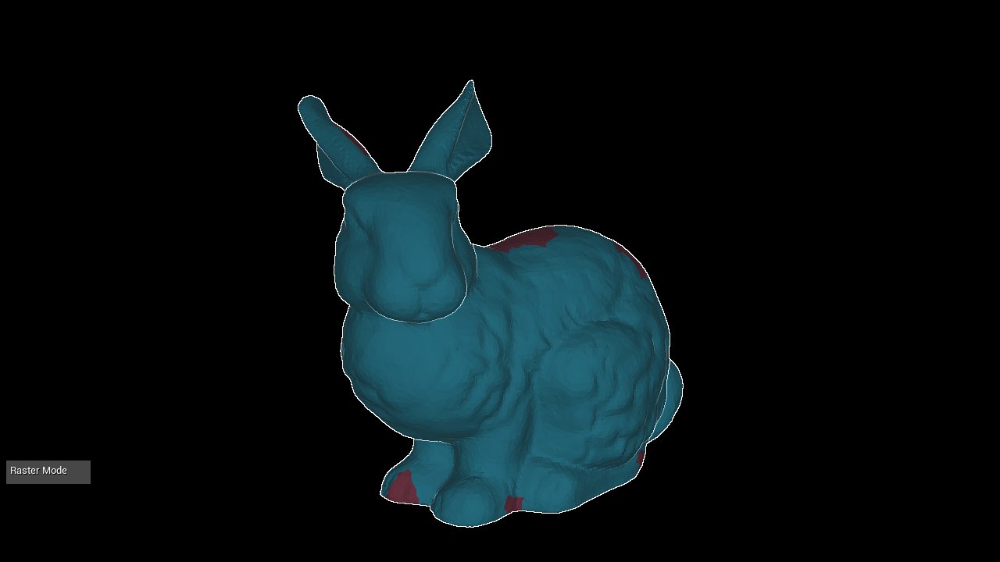
RasterMode. Use the diagnostic legend and engine source for its color meaning; the colors are not a universal hardware-versus-compute convention. Open image at full size.RasterBins. Geometry visibility and programmable raster behavior organize this work. Open image at full size.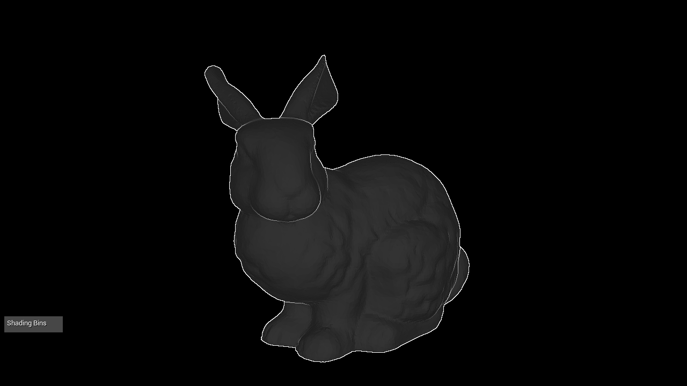
ShadingBins. Material evaluation is organized after visibility; it is not another LOD hierarchy. Open image at full size.The lit capture then evaluates the material and lighting on the resolved geometry. Nanite supplies visible surface identity; the material supplies surface properties; lighting computes reflected radiance. It does not follow that every material or light evaluation is performed by the Nanite cluster-culling shader. The visibility-buffer reconstruction derived in the lab is the mechanism that lets these phases remain connected while using different work organizations.
Materials can change coverage, not just color
The visibility-first explanation appears to assume that triangle positions and coverage are already known. A stone material largely fits that assumption. A leaf material does not necessarily fit it. It may move vertices with World Position Offset, abbreviated WPO, and discard samples through an opacity mask. The renderer must execute those parts of the material before it can decide which surface is visible. Evaluating the leaf's color afterward cannot repair a visibility decision made using the undeformed rectangle.
This creates two different reasons to group material work. A raster bin groups compatible behavior needed while establishing geometry and coverage. A shading bin groups the material evaluation performed for visible samples. Two materials can share raster behavior but have different shading behavior. Conversely, a material whose WPO is disabled for one instance may permit a cheaper raster path for that instance even though its surface appearance uses the same material family. Treating a bin as simply “one material” loses these distinctions.
The original 2021 Nanite design presentation describes a much more restricted rasterization context than the contemporary engine. Epic's later Fortnite work introduced programmable rasterization to production content, including masked and vertex-deformed surfaces. The historical images below are from Epic's 2023 article about UE5.1, not captures of the local 5.8.1 build. They are useful because they show the same scene under ordinary appearance and under a raster-work classification.


The current source initializes both compute rasterization and programmable rasterization to enabled. It also includes a runtime tessellation control initialized to enabled, subject to the asset, material, platform, and project support that actually select that path. A global enable is not a guarantee that a particular mesh tessellates. The current controls should be read together with shader permutations and mesh capability checks, rather than treated as a checklist of universally available behavior.
WPO has an additional consequence for deferred shading. When visible attributes are reconstructed later, they must correspond to the same deformed surface used for visibility. Depth, triangle identity, interpolation, and any required current or previous deformation must agree. If the visibility pass bends the leaf but later code reconstructs its attributes from an incompatible position, normal mapping, motion, and lighting can detach from the geometry. Supporting deformation consistently is an obligation across passes.
For masked leaves, the opacity test may require texture access before a winner is known. A dense stack of leaves can therefore execute material-dependent work for several candidates that eventually lose. Visibility-first shading removes much wasted full surface shading, but it cannot defer a calculation needed to establish visibility itself. This explains why replacing alpha-cutout cards with carefully authored opaque leaf geometry can have a different performance profile even when the opaque geometry has more triangles.
After visibility, the current Nanite shading implementation builds bin and dispatch data for the material work. Its output provides the opaque renderer with surface quantities such as normal, base response, roughness, and other shading-model data. A deferred renderer stores such quantities in geometry buffers, usually shortened to GBuffer, so that lights can be evaluated later without re-running the complete authored material graph for every light. The separate material graph compilation article explains how one authored graph becomes these different executable contexts; the essential point here is that visibility and surface evaluation ask different subsets of the graph to run.
Transparency requires another caution. The one-winning-surface model is a good starting point for opaque and masked coverage. Glass can transmit light through multiple surfaces and cannot generally be reduced to the same single opaque depth winner. This engine contains evolving Nanite translucency code, but its presence does not make every blend mode or lighting path equivalent to opaque Nanite. For an actual project, validate the mesh, material blend mode, platform, and chosen translucency path together. The courtyard's glass will be discussed as a distinct transport and compositing problem rather than silently folded into opaque visibility.
Distinguish selecting existing detail from creating displaced detail
The scan already contains geometric detail. Choosing a coarser replacement discards some of that detail when the view can tolerate it. Tessellation followed by displacement solves a different problem: a base triangle may not have enough sample points to represent a varying material-defined surface. Moving only its three existing vertices cannot create an interior bump whose displacement is zero at all three corners. Therefore the geometry must be subdivided before evaluating that displacement field.
The separate computed patch below makes that failure visible. Its displacement is . All panels use the same analytic function, camera, and amplitude. Only the number of grid subdivisions changes. The 2-by-2 grid yields eight triangles; the 16-by-16 grid yields 512; the 64-by-64 grid yields 8,192. This is a CPU displacement experiment, not displaced Stanford geometry and not an Unreal Nanite tessellation capture.
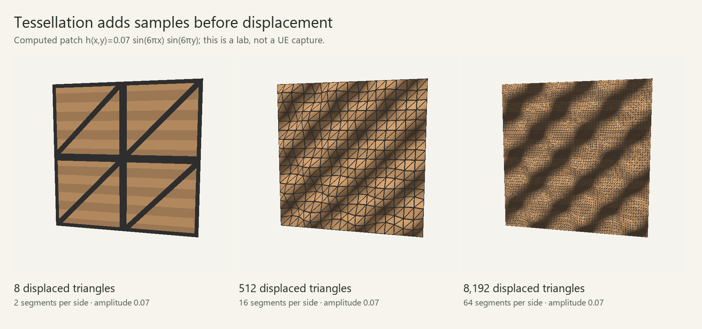
We can derive an elementary sampling requirement along an edge rather than choosing a subdivision count arbitrarily. Parameterize that edge by length coordinate . If the scalar displacement has bounded second derivative , the linear-interpolation remainder on a segment of length is . The product's maximum absolute value is , attained at the midpoint. Thus
LaTeX source
\|h-Ih\|_\infty\leq\frac{M\Delta^2}{8}.LaTeX source
\frac{M(L/n)^2}{8}\leq\varepsilon
\quad\Longrightarrow\quad
n\geq L\sqrt{\frac{M}{8\varepsilon}}.For a one-dimensional sinusoid , . This bound explains why large amplitude and high frequency require more geometric samples. It is an edge-wise scalar result, not a complete two-dimensional displacement proof: a surface patch needs bounds over its interior, a normal field can also vary, and a texture-derived displacement may not provide a convenient analytic curvature bound. Nevertheless, it separates the relevant quantities clearly: spatial frequency, amplitude, and acceptable geometric error.
Unreal's tessellation code uses projected edge scales, view LOD scale, dicing rate, distance-related behavior, and table-driven tessellation patterns. GetTessFactors computes factors before FTessellatedPatch rounds/clamps and decodes an appropriate pattern. It is not implementing the sinusoidal curvature formula above. The derivation gives a small implementer's model for why sampling is necessary; the engine code gives the actual runtime mechanism and its parameters.
What FTessellatedPatch provides
| Information | Representation in this shader | Use |
|---|---|---|
| Pattern storage address | TableOffset | Find the selected tessellation pattern in the shared table. |
| Pattern and output sizes | Pattern_NumVerts_NumTris | Decode the chosen pattern and bounded vertex/triangle counts. |
| Domain locations and connectivity | Table loads of encoded barycentric vertices and packed triangle indices. | Generate sample points on the original patch and connect the resulting microtriangles. |
Shared edges must select compatible samples, just as LOD boundaries must remain compatible. Displacement must also expand culling bounds by its actual permitted range; otherwise the renderer can correctly cull the undisplaced bound while the displaced surface ought to be visible. Material compilation, raster-bin selection, patch generation, visibility, and material evaluation consequently have a real interface. The geometry system needs to know which material behavior affects coverage or position without taking ownership of every later lighting calculation. That interface is more fundamental than any particular dicing-rate default.
Actually displace and tessellate the Nanite asset
The engine experiment changes the bunny's material to a compiled displacement material. Its normalized displacement is 0.5 + 0.5 sin(2π x / 20 cm), using world position without material offsets. A magnitude of 2 cm and center 0.5 produce a displacement range of −1 to +1 cm along the normal. The native editor bridge connects the displacement material property explicitly, because this engine's Python enum does not expose that pin. The capture verifies compilation rather than accepting a default-material fallback.
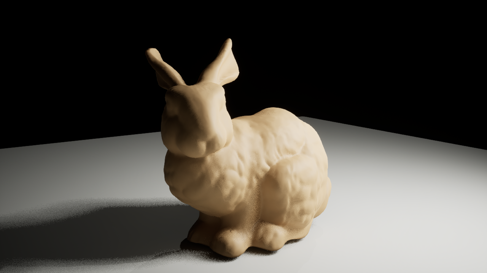
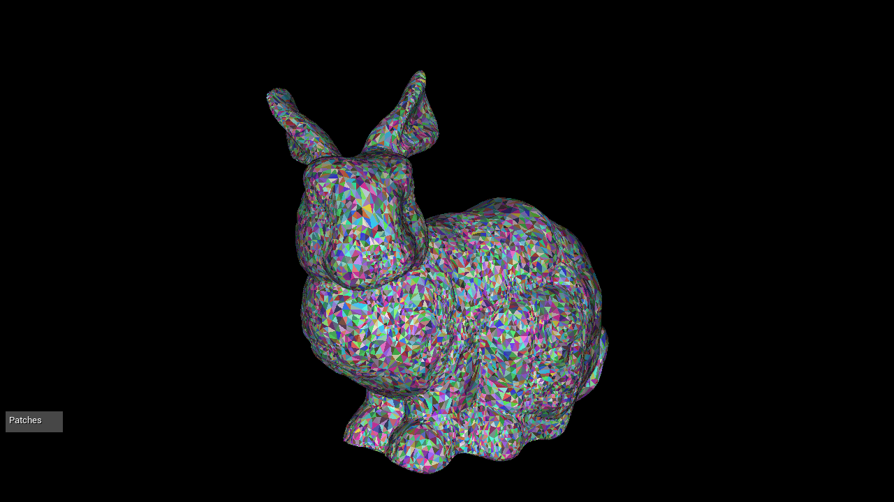
Patches visualization of the tessellation path. Open image at full size.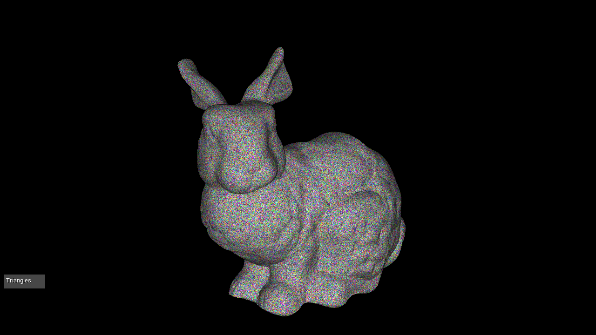
This shows why build-time simplification and runtime tessellation are complementary operations. The hierarchy selects an appropriate representation of the source shape. Runtime displacement evaluates additional shape variation whose sampling density depends on the view and tessellation policy. Bounds, raster bins and material compilation must agree about that variation. Turning a tessellation switch on without a compiled displacement path is not the same experiment.
A shadow is another visibility problem with a different observer
Direct lighting asks how much light reaches a visible surface from a light source. For a simple point-like light, one part of the answer is whether an occluder lies between light and surface. A shadow map answers this by rendering depth from the light's viewpoint. During lighting, the receiver is transformed into that view and its depth is compared with the stored nearest depth. The shadow-map view has its own projection and sampling resolution; it is not the camera image reused from a different angle.
Virtual Shadow Maps divide that depth representation into pages so that only needed regions consume physical storage and rendering work. The word virtual here follows a familiar idea: the logical shadow resolution can be large while the physically mapped pages are demand-driven. Nanite is particularly useful when rendering those requested pages because it can choose and cull geometry for the shadow views at fine granularity. But the two systems own different pages. A Nanite geometry page contains geometry; a shadow page contains light-view depth.
Suppose the main camera looks at the sunlit side of the crate while the lamp illuminates its other side. Geometry invisible to the camera may still cast the crate's shadow on the wall. Reusing the camera's cluster survivor list as the complete shadow caster list would be wrong. The light's views need their own visibility and detail decisions. Conversely, a cluster that covers many camera pixels may cover very few shadow samples, so using camera detail everywhere can overspend badly.
Shadow caching exploits another kind of coherence. If a light and its occluders stay unchanged, a rendered page can remain useful across frames. If the crate moves, affected pages must be invalidated and redrawn. If every leaf moves continuously through WPO, some shadow pages may lose much of that reuse. The expense comes not only from the vertex animation itself, but from the cached work that animation makes obsolete.
The current Virtual Shadow Map cache controls include explicit deformable-mesh invalidation behavior. Nanite also has an experimental r.Nanite.VSMInvalidateOnLODDelta control initialized to zero in this checkout. Its purpose is related to geometry streaming: a shadow page rendered before desired detail arrives can otherwise retain an older geometric approximation. The control's source warns about increased invalidation when streaming struggles. This illustrates a general cache problem: newly available detail can invalidate a result even when no gameplay transform changed.
A directional sun presents a further scale issue. Nearby contact shadows need much finer spatial detail than a distant hillside. A set of spatially varying shadow regions and resolutions lets the renderer place precision near the camera and lower precision farther away. Local lights have their own projection and coverage challenges. An engineer should resist describing all of this as “Nanite draws the shadow once.” A frame may involve numerous light views, mapped page regions, cache states, and invalidation decisions.
In the courtyard, compare three changes separately. Move the camera while keeping sun, crate, and tree still; this changes demanded shadow coverage. Move the crate while keeping the camera still; this changes occluder content. Turn on wind animation for the tree; this introduces continuous deformation and potentially continuous invalidation. Capturing those cases separately reveals whether cost is driven by demand, updates, or raster work. A single average frame time over all three motions hides the reason.
Direct shadows still do not explain the warm light reflected from the crate onto nearby stone, or the bluish illumination in a region that cannot see the sun but can see the sky. Those require light arriving through directions other than a direct connection to one explicit light. Resolving that problem takes us from the geometry visibility machinery of Nanite to the transport approximations organized by Lumen.
Reproduce the evidence and build the next implementation
The complete downloadable laboratory source lives in Scripts/Docs/unreal_articles/labs/nanite/. download.py retrieves and hashes the Stanford archive, reads the named PLY member, records attribution, and exports the normalized Unreal OBJ. run.py builds the adjacency partition and replacement hierarchy, renders every figure, and writes the measurement record. Its dependency versions are pinned in requirements.txt. The downloaded model, virtual environment, intermediate arrays, and cached hierarchy remain ignored; published figures and metrics are the reviewable output.
python -m venv .venv
.venv\Scripts\python -m pip install -r requirements.txt
.venv\Scripts\python download.py
.venv\Scripts\python test_simplify.py
.venv\Scripts\python run.py --rebuildRun those commands from the laboratory directory. A repeat without --rebuild reuses the locally generated hierarchy and rerenders the figures. Delete or rebuild that cache after changing construction code; it is a development convenience, not a versioned asset format. The checked-in provenance contains archive and source-mesh hashes so a different network response does not silently become a different experiment. The figures are deterministic for the specified inputs and implementation, with dependency/platform details relevant to floating-point reproducibility.
The useful tests follow ownership boundaries. Construction checks that all source triangles enter exactly one leaf, every cluster fits its capacity, locked positions and exterior edges survive reduction, and parent envelopes do not understate child envelopes. Selection checks exact leaf coverage for every camera cut. Rasterization checks positive depths and normalized barycentrics. Temporal culling compares the final depth image with an unculled current-frame reference. A screenshot inspection complements these tests; it cannot replace them.
These checks also reveal what remains unproved. The experiment does not validate arbitrary nonmanifold imports, UV or normal seams, quantized decoding, missing stream pages, near-plane clipping, GPU races, masked materials, deformation, or production tessellation. It does not measure GPU frame time. A 128-triangle capacity is the same numerical limit used in one Nanite path, but sharing that number is not evidence that the CPU lab has Nanite's performance or complete behavior. The deliberate errors and limitations should guide the next implementation milestone, not be erased from the results.
For Arda, begin by giving the asset builder an explicit output contract: independently decodable geometry blocks, conservative bounds, well-defined errors, coherent replacement relationships, material association, and residency dependencies. Give the runtime a separate view input and output list of selected resident work. Let visibility reference stable geometry and instance identities. Let the material evaluator reconstruct the surface behind that identity. Put tests at each transition, so a change to packing cannot silently alter LOD, and a change to shading cannot silently alter which geometry exists.
Then improve the weakest measured component. Here that is the pessimistic correspondence envelope and constrained tree, as the distant-bunny triangle counts make obvious. A stronger geometric error metric, better group partitioning, and a carefully validated DAG cut should reduce work without losing coverage. GPU traversal, compressed streaming, and dual hardware/compute rasterization become engineering advances built on an understood contract, rather than impressive-sounding features attached to a renderer whose geometry can disappear during an LOD transition.
Turn the experiment into a GPU renderer
At this point the bunny is no longer just a mesh. It is immutable geometry, replacement dependencies, error metadata, and a stream of view-dependent work. Turning the experiment into a renderer is primarily a question of making those lifetimes explicit. The asset builder may spend seconds optimizing a partition. A traversal shader needs compact records and bounded work. A material pass needs enough information to reconstruct a surface, without repeating the traversal. A streaming manager needs to replace physical storage while references remain valid. The CPU experiment has made the geometry decisions inspectable; these contracts make the same decisions practical at runtime.
Start with an offline format independent of your in-memory C++ structs. Write a versioned header, bounds and error records, group dependency records, encoded cluster payloads, and page dependency information. Check every offset and count when loading. A raw pointer in a builder object cannot be an address in an uploaded asset. Use asset-relative offsets or explicitly typed indices, and distinguish a logical page ID from a physical page allocation. This is a proposed implementation layout for Arda, not a serialization specification for Unreal's proprietary asset format.
The minimum records for a virtual-geometry implementation
| Record | Information it must provide | Lifetime and consumer |
|---|---|---|
| Geometry asset | Format version, root hierarchy range, material-section mapping, quantization decode parameters, logical page directory. | Shared across placements. Loading registers the asset; views never rewrite it. |
| Replacement group | Children and their jointly valid coarse replacement, enclosing bounds, simplification error and parent error, dependencies needed for a complete transition. | Built offline. Traversal must use the builder's compatibility rules. |
| Cluster | Vertex and triangle decode ranges, local bounds, material ranges, winding and attribute information, owning page. | Resident decoded or encoded data. Rasterization reconstructs its triangles. |
| Geometry instance | Asset handle, current and previous transforms, bounds expansion, material overrides, generation and deformation revision. | Persistent scene state. Different views share it but make independent selections. |
| View | Projection, viewport, clip planes, pixel-error policy, depth convention, HZB identity and compatible history. | One camera, shadow, or cache capture. A threshold belongs to a view. |
| Resident page map | Logical-to-physical translation, generation, dependency readiness, upload completion, and retirement fence. | Streaming state. A complete upload becomes visible atomically to consumers. |
| Visible-cluster record | Instance, cluster, view, raster-bin and deformation inputs sufficient to reconstruct one selected unit. | Frame-local append output. Indirect dispatch and visibility IDs refer to it. |
| Visibility sample | Winning depth plus a reconstructible triangle identity, or equivalent references into visible-cluster work. | Per pixel/sample. Material evaluation consumes it after visibility is resolved. |
The actual Unreal implementation divides these jobs across Nanite builder resources, renderer scene data, streaming management, hierarchy traversal, raster bins, and shading work. The source chapters above identify those implementations. Do not copy this table into a single giant mutable object. A geometry page should not contain a pointer to a frame's material work queue. A persistent instance should not store one permanent answer to “visible?” A page residency update should not silently change a cluster ID that a running frame still uses.
A first GPU implementation can retain the reference lab's replacement tree. Upload its records and compare every selected cut against the CPU result before adopting the more flexible DAG. Use a work queue whose entry is (instance, region, view). A thread tests a region; it either emits its coarse replacement or enqueues all required children. Reserve queue space with bounded atomics, record overflow, and retain a conservative fallback when capacity is exhausted. An overflowing queue that silently drops entries turns a performance problem into missing geometry.
// Reference TREE traversal. The production Nanite DAG has group dependencies.
push(instance, root_region, view)
while work remains:
item = pop()
if outside_frustum(conservative_world_bounds(item)): continue
if temporal_occlusion_rejects(item): defer_for_post_pass(item); continue
if coarse_error_is_acceptable(item) or children_are_not_fully_resident(item):
emit_all_clusters_of_replacement(item)
request_missing_child_pages_if_needed(item)
else:
enqueue_all_children(item)
// Only a complete replacement is emitted. No partial group transitions.When moving to a DAG, do not keep this traversal and merely change the word “parent.” A graph node may participate in a shared replacement. The builder must store the exact group relationships and monotone error data that make the selection predicate consistent. The runtime must ensure the shared transition is selected once, with all required pieces. Establish the invariant first: every surface region has one compatible selected representation. Then design GPU scheduling around that invariant, rather than using atomics to patch overlapping selections after the fact.
Streaming belongs inside that reasoning. Before evicting a page, determine whether a resident coarser representation can cover all dependent regions and whether any in-flight frame still reads its physical allocation. Build the next page map, wait for transfer completion, publish it for a new frame, and retire old allocations behind a GPU fence. A memory barrier orders accesses; it does not prove an asynchronous transfer has completed on another queue. Likewise, a CPU reference count does not by itself establish that GPU work has stopped using a buffer. These are separate synchronization conditions.
For a first rasterizer, use hardware triangles and an integer visibility target. This already verifies hierarchy selection, instance transforms, identity reconstruction, and material evaluation. Add a software rasterizer after those contracts work. Assign small triangles to cooperative compute work, evaluate edge equations with a defined sample convention, and resolve depth and identity together. If depth wins but the stored ID belongs to a losing triangle, the later material pass shades the wrong surface. Packing or synchronization must make the winning pair coherent. The lab's sequential CPU depth test avoids that race; a parallel GPU implementation must solve it explicitly.
Hybrid rasterization adds another dependency. Hardware and software work may write the same logical visibility result. They need compatible clipping, depth range, tie-breaking, sample positions, and ownership rules. Treat near-plane clipping and nearly degenerate triangles as first-class cases. Start by comparing both paths on a deliberately tiny mesh with shared edges, then the bunny, and finally many overlapping instances. A convincing color image can hide incorrect primitive IDs at a silhouette; inspect the identity and depth buffers independently.
Material evaluation follows resolved visibility. Decode the winning triangle, transform its vertices, reconstruct perspective-correct attributes and derivatives, and then evaluate the appropriate material program. Grouping pixels by material improves coherence but does not eliminate the need for correct neighboring derivatives. A tiled or compute shading implementation must derive gradients from the triangle's interpolants rather than assume an arbitrary workgroup has the same quad layout as a pixel shader. Texture mip selection can otherwise flicker even when geometry selection is correct.
Programmable deformation belongs before the affected visibility decision. If displacement can move the surface outside its stored bounds, culling must see expanded or updated bounds. If masked material code rejects samples, coverage depends on that code and its textures. A shading-only color parameter can change after visibility; a parameter that changes opacity or displacement cannot be treated as the same kind of update. Keep separate revision categories for shading, coverage, geometry deformation, and bounds. This is the architectural reason that programmable rasterization is a larger change than adding a new material slot.
Finally, expose the intermediate states as debug views from the beginning. Display selected group IDs, hierarchy depth, missing pages, projected error, raster path, material bins, and history rejection reasons. Record counts alongside each image. When the bunny loses an ear, “Nanite is broken” is too broad to investigate. A missing-page overlay may identify incomplete residency; a selected-cut overlay may reveal an invalid replacement; a depth view may show a clipping error; a material-ID view may reveal a decode mismatch. The representation should provide evidence about its own decisions.
A sequence of implementations you can actually verify
Build the system in increments whose output can be checked independently. Begin with the original mesh and a conventional rasterizer. Confirm its winding, orientation, normalization, materials, and silhouette. Then construct leaf clusters without simplifying anything; concatenating their triangles must recover the source triangles exactly once. The first optimization should leave the image unchanged. This catches partition and remapping errors before a simplifier can plausibly explain them as approximation.
Next introduce one constrained reduction. Test its exterior boundary position and connectivity, material seams, degeneracy handling, and measured error. Only then repeat the operation into a hierarchy. Select every legal coarse level in isolation, then mixed cuts, and verify coverage of leaf regions. The reference implementation's invariants accompany its generated metrics, so the figure is not the only evidence that the reduction executed correctly. A rendering that happens to look smooth is not proof that its hierarchy can support arbitrary compatible cuts.
Port traversal without streaming first. Compare selected region IDs against the CPU for identical cameras and thresholds. Introduce missing pages by deliberately withholding selected child pages, and verify that the image falls back to a complete coarser representation. Move the camera quickly and delay upload completion to exercise transitions. A useful experiment is to vary residency while fixing the camera: the selected representation may become coarser, but it must never acquire holes solely because a transfer has not finished.
Add occlusion last in the visibility sequence. First validate current-frame frustum rejection and depth against the unculled image. Then add a previous-frame HZB and the recovery pass demonstrated in the lab. Move the occluder, the camera, and the bunny separately. Count recovered regions and compare final depth with an unoccluded reference. Temporal occlusion saves work only if it preserves newly revealed geometry. A cache hit rate without a visibility-correctness check rewards the wrong behavior.
Performance measurement should separate build time, disk bytes, resident bytes, streaming requests, traversal work, selected clusters, submitted triangles, covered samples, overdraw, and material work. The number of triangles in the asset is useful provenance but a weak predictor of the frame cost. Equally, the CPU lab's execution time is not a Nanite benchmark. The production GPU pipeline has different parallelism, compression, scheduling, and cache behavior. Use its statistics to understand algorithmic work; profile your own implementation on the target GPU before setting budgets.
The resulting Arda module boundary is straightforward: geometry building produces versioned virtual assets; scene instances publish transforms and semantic revisions; streaming publishes a resident mapping; a view-dependent visibility pipeline produces reconstructible surface identities; material evaluation turns those identities into shading inputs. Shadows and material captures are additional clients with their own views and error policies. This is enough structure to extend the implementation while preserving the central promise: every visible region is represented coherently, and every shaded sample can be traced back to the geometry that won visibility.
Source evidence and reproducibility
The source ranges below were inspected in the local Unreal 5.8.1 checkout. Their exact hashes are recorded beside the laboratory source. These are implementation anchors for the worked examples, not a claim that the reduced reference code reproduces every engine path.
- Engine/Shaders/Shared/NaniteDefinitions.h, lines 21–28
The inspected triangle path caps a cluster at 128 triangles and 256 vertices.
- Engine/Source/Developer/NaniteBuilder/Private/Cluster.h, lines 272–327
Builder FCluster stores geometry, external edges, bounds/errors, group relationships, and encoding work.
- Engine/Source/Developer/NaniteBuilder/Private/ClusterDAG.h, lines 33–47
FClusterGroup carries children, bounds, parent error, page-range association and mesh/assembly state.
- Engine/Source/Developer/NaniteBuilder/Private/ClusterDAG.cpp, lines 1375–1602
ReduceGroup merges children, simplifies, repartitions parents and propagates shared parent error.
- Engine/Source/Developer/NaniteBuilder/Private/Cluster.cpp, lines 965–1052
The builder supplies attribute weights, locks external edge positions, and configures the mesh simplifier.
- Engine/Source/Runtime/Engine/Public/Rendering/NaniteResources.h, lines 105–144
FPackedCluster groups geometry decoding, culling and material-access metadata into the GPU record.
- Engine/Shaders/Private/Nanite/NaniteClusterCulling.usf, lines 256–312
Hierarchy traversal and cluster draw eligibility use projected edge scales, stored errors and view/instance scale conventions.
- Engine/Shaders/Private/Nanite/NaniteDataDecode.ush, lines 171–188
FHierarchyNodeSlice exposes bounds, error interval, child/page references, loaded/enabled flags and deformation metadata.
- Engine/Source/Runtime/Engine/Public/Rendering/NaniteResources.h, lines 248–258
FPageStreamingState records storage sizes and offsets, dependencies, hierarchy depth and flags.
- Engine/Shaders/Private/Nanite/NaniteInstanceCulling.usf, lines 353–421
The instance-culling shader distinguishes previous-frame/main-pass occlusion from post-pass recovery.
- Engine/Shaders/Private/Nanite/NaniteDataDecode.ush, lines 48–60
FVisibleCluster identifies the view, instance, page and cluster, with raster flags, assembly and virtual-shadow metadata.
- Engine/Shaders/Private/Nanite/NaniteWritePixel.ush, lines 19–92
The supported 64-bit visibility path packs identity/depth and performs an atomic maximum.
- Engine/Shaders/Private/Barycentrics.ush, lines 60–101
Triangle reconstruction computes perspective-correct barycentric values and quotient-rule derivatives.
- Engine/Shaders/Private/Nanite/NaniteTessellation.ush, lines 61–143
Tessellation factors use view-space edge lengths/depth, LOD scale and dicing controls before pattern initialization.
- Engine/Shaders/Private/Nanite/NaniteTessellation.ush, lines 135–211
FTessellatedPatch stores a table offset and packed pattern/output counts and decodes barycentric vertices/connectivity.